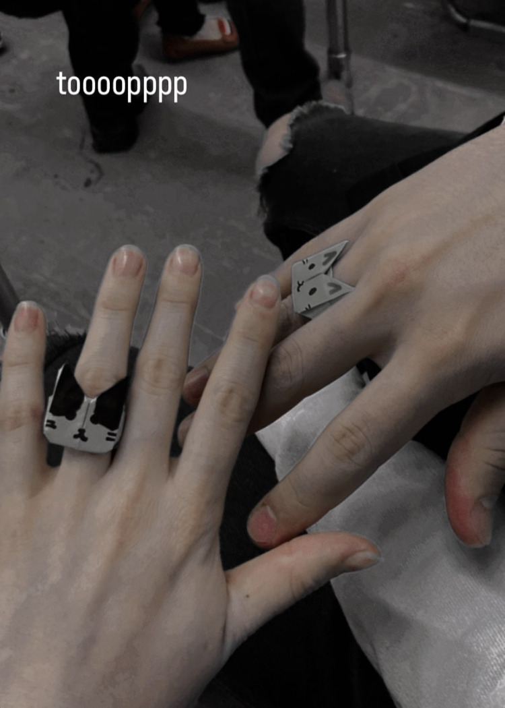

|
Soy muy afortunado de tenerte en mi vida, siempre lo supe.
Desde el dia uno lo sabia, eres una chica muy linda, atractiva, risueña, coqueta, y tienes unos ojos tan pero TAN hermosos que la verdad no se si son ojos o dos galaxias enteras, las cuales a mi me gustaria explorar y una vez exploradas las podria explorar cientos de veces. Aun recuerdo el dia que salimos por primera vez, te veias muy linda (simpre te ves muy linda que queda claro jsjsjs) pero ese dia no lo podia creer, por un lado no sabia si era real lo que estaba sucediendo y creeme que estaba nerviso pero demasido nervioso. La verdad no sabia a donde llevarte, siendote sincero no te voy a mentir pude llevarte a cualquier otro lugar pero no se me ocurrio nada jsjsjs pero creo que estuvo bien para la primera cita. Con el paso de los dias me fui enamorando más de ti, de como me desmotrabas cariño, de como me tocabas. de como me hcias sentir (eso fue y es lo más lindo) puedo decirte que eanmorado estoy, tengo prubas y no me caben dudas. |
 |